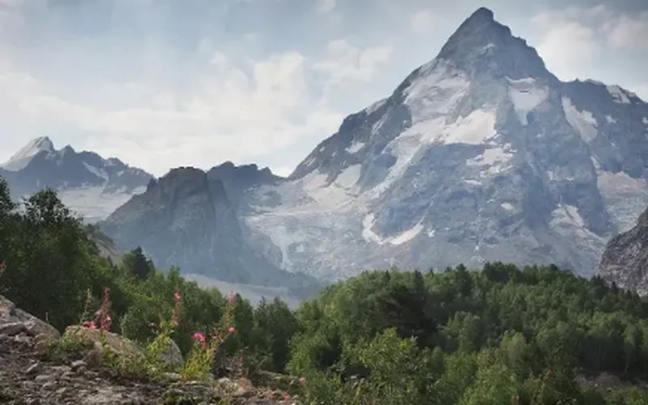
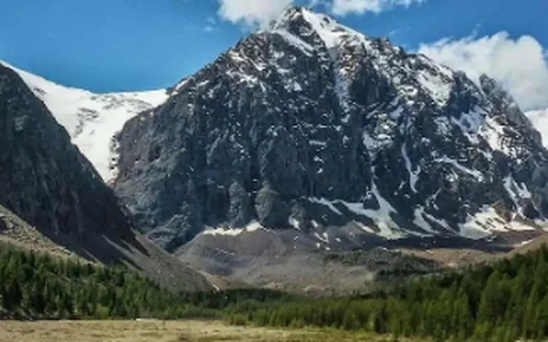
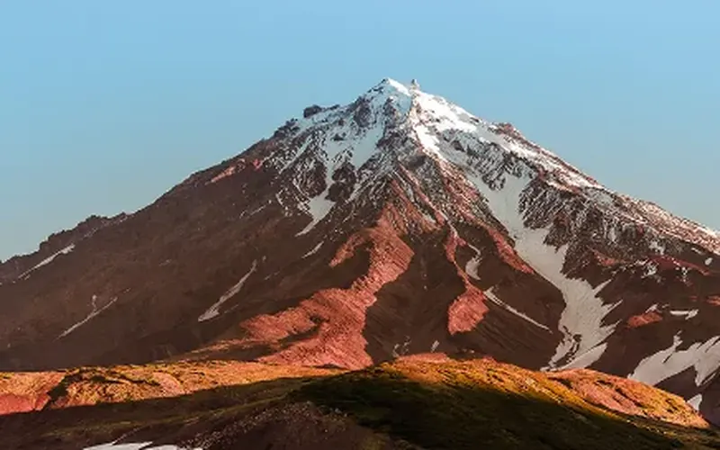

Федерация альпинизма России
Квалификационный экзамен проводится в соответствии с постановлением Правительства Российской Федерации от 1 июня 2021 г. № 1003. Лица, успешно прошедшие аттестацию, получают квалификацию инструктора-проводника и вносятся в федеральный реестр.
Сведения об аттестованных инструкторах-проводниках размещаются в государственном реестре Министерства экономического развития Российской Федерации. Осуществление деятельности без внесения в реестр не допускается.
Открыть реестр ↗Теоретический этап проводится в заочно-дистанционном формате. Практический этап — очно на уполномоченных базах. Даты практической части согласуются при регистрации заявления. Квалификационные экзамены по подвиду «ски-альпинизм и фрирайд» проводятся отдельно.
| Дата | Этап | Подвид | Формат |
|---|---|---|---|
| 12 августа 2026 | Теоретический этап | Альпинизм и горный туризм | Заочно |
| 26 августа 2026 | Теоретический этап | Альпинизм и горный туризм | Заочно |
| 9 сентября 2026 | Теоретический этап | Альпинизм и горный туризм | Заочно |
| 23 сентября 2026 | Теоретический этап | Альпинизм и горный туризм | Заочно |
Инструкторы, внесённые в государственный реестр по спискам туроператоров, обязаны пройти аттестацию до 1 октября 2026 г.
К аттестации допускаются лица, соответствующие требованиям к опыту, состоянию здоровья и уровню образования, в том числе выпускники программ ФАР, а также претенденты с подтверждённым самостоятельным опытом — при положительном решении аттестационной комиссии.
Лица, освоившие программу профессиональной переподготовки, получают допуск к квалификационному экзамену и направляются на ближайшую аттестационную сессию.
Претендент представляет документы, подтверждающие маршрутный опыт, спортивный разряд либо стаж. При несоответствии требованиям к допуску рекомендуется пройти обучение по программе ФАР.
Аттестация включает подачу заявления, проверку комплекта документов, теоретический и практический этапы, принятие решения комиссией и внесение сведений в федеральный реестр.
Заявление направляется с указанием фамилии, имени, отчества, избранного подвида и сведений об опыте. Перечень недостающих документов сообщается в ответе.
Аттестационная комиссия рассматривает документы о горном опыте, состоянии здоровья и образовании. При соответствии требованиям претендент включается в состав группы на экзамен.
Проводится в заочно-дистанционном формате: 25 вопросов по избранному подвиду, продолжительность — 60 минут. Зачётное число правильных ответов — не менее 20.
Проводится очно на реальном рельефе: личная техника, сопровождение группы, обеспечение безопасности и спасательные работы. По подвиду «ски-альпинизм и фрирайд» дополнительно оцениваются лавинная безопасность и действия на неподготовленных склонах.
При успешном прохождении обоих этапов присваивается квалификация инструктора-проводника, сведения вносятся в федеральный реестр.
Лица, не сдавшие теоретический или практический этап, допускаются к повторной сдаче в порядке, установленном аттестационной комиссией.
Практический этап проводится на уполномоченных аттестационных базах Федерации альпинизма России. Конкретная база и сроки сессии определяются избранным подвидом и графиком набора.



Регион Дальний Восток. Сроки отдельных сессий — по графику набора.

Севастопольский сектор ЮБК — практический этап по альпинизму и горному туризму. Экзамен по ски-альпинизму и фрирайду проводится отдельно.
Аттестация является квалификационным экзаменом и не заменяет освоение образовательной программы. При отсутствии подтверждённого опыта либо при отказе в допуске претендент может пройти программу профессиональной переподготовки ФАР. По завершении обучения выпускник направляется на аттестацию.
Программы обучения
Документы, регламентирующие проведение аттестации, размещены для ознакомления до подачи заявления.
Для регистрации на аттестационную сессию направьте заявление с указанием избранного подвида. В ответе сообщаются перечень документов, база проведения и срок сессии.
dpo@alpfederation.ru